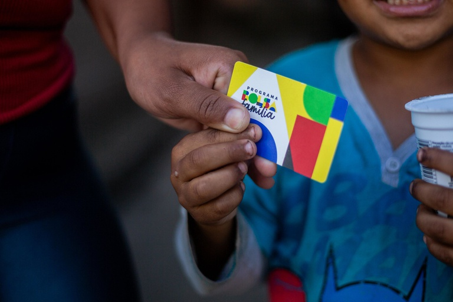

BOLSA FAMÍLIA
Estudo acompanhou beneficiários de 2012 a 2024 e mostra que 48,9% deles não precisaram mais estar no registro do Governo Federal para famílias de baixa renda

U m estudo que acompanhou a trajetória de 15,5 milhões de jovens beneficiários do Bolsa Família revela que quase metade (48,9%) deixou completamente o Cadastro Único até 2024. A pesquisa “Determinantes da Saída do Cadastro Único: Evidências Longitudinais a partir dos beneficiários do Bolsa Família em 2012”, do Instituto Mobilidade e Desenvolvimento Social (Imds), acompanhou os jovens durante 12 anos e identificou os fatores que determinaram a permanência ou saída da rede de proteção social.
A pesquisa analisou pessoas que, em dezembro de 2012, tinham entre sete e 16 anos e estavam registradas como dependentes na folha de pagamento do Programa Bolsa Família. O estudo escolheu tal ano, por representar um momento de estabilidade institucional do programa e por ser o primeiro com microdados detalhados do Cadastro Único sistematicamente disponíveis.
Após 12 anos de acompanhamento, 48,9% dos jovens, o equivalente a 7,6 milhões de pessoas, saíram completamente do Cadastro Único. Outros 17,6%, cerca de 2,7 milhões de jovens, saíram do Bolsa Família e permaneceram apenas no Cadastro Único, sugerindo melhora relativa de renda, mas mantendo-os ligados à rede de proteção social. Portanto, do total acompanhado, 66,45% deixou o programa de transferência de renda.
A pesquisa registrou a permanência no programa em 33,5%, aproximadamente 5,2 milhões de pessoas, o que sinaliza a persistência de condições de vulnerabilidade.
Em 2012, o grupo da pesquisa era predominantemente composto por jovens pardos e pretos, que totalizavam 73,4% do total. Embora 96% frequentassem a escola, 27,4% estavam em defasagem idade-série. Uma parcela expressiva das famílias vivia em condições domiciliares precárias, 14,3% moravam em casas com materiais frágeis e menos da metade, 40,4%, possuía ligação à rede coletora de esgoto.
A análise revelou seletividade no desligamento do Bolsa Família com jovens que apresentavam melhores condições iniciais em 2012, tendo maior probabilidade de não serem encontrados no Cadastro Único em 2024. O sexo masculino foi o fator individual mais robusto, aumentando significativamente a chance de saída. Jovens alfabetizados em 2012 tiveram maior probabilidade de desvinculação, assim como aqueles que trabalhavam precocemente.
Segundo o estudo, as condições familiares também influenciaram a trajetória dos jovens. Responsáveis com maior escolaridade, especialmente aqueles com ensino médio completo ou superior, aumentaram a probabilidade de desligamento. A inserção em empregos formais também esteve associada à saída do programa, assim como a situação de famílias com renda per capita superior a R$ 140 em 2012.
Em contrapartida, fatores de vulnerabilidade estiveram associados à permanência na rede de proteção social. Jovens pretos e pardos apresentaram menor probabilidade de saída em comparação a jovens brancos. A permanência também esteve relacionada a condições precárias de moradia.
O tempo de permanência da família no Bolsa Família até 2012 influenciou diretamente o resultado em 2024. Famílias com curta exposição ao programa, de até dois anos, tiveram a maior probabilidade de desligamento.
O estudo demonstra que a trajetória dos jovens foi influenciada pela combinação de características individuais, familiares e contextuais. A permanência no Bolsa Família esteve ligada a situações de maior vulnerabilidade. Já a saída completa do Cadastro Único sugere trajetórias de mobilidade socioeconômica, geralmente favorecidas por maior capital humano inicial e melhores condições econômicas familiares.